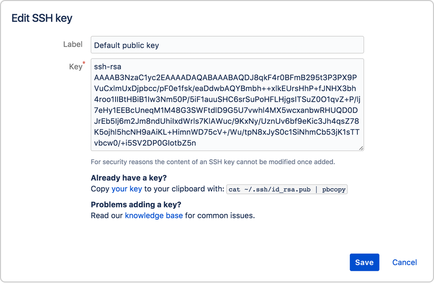

Set up SSH for Git on Windows
Use this section to create a default identity and SSH key when you're using Git on Windows. By default, the system adds keys for all identities to the /Users/[your-username]/.ssh directory.
Step 1. Set up for default identity
- From the command line, enter ssh-keygen. The command prompts you for a file to save the key in:
$ ssh-keygen
Generating public/private rsa key pair.
Enter file in which to save the key (/c/Users/emmap1/.ssh/id_rsa):
- Press enter to accept the default key and path, /c/Users/[your-username]/.ssh/id_rsa.
To create a key with a name or path other than the default, specify the full path to the key. For example, to create a key called my-new-ssh-key, you would enter a path like the one shown at the prompt:
$ ssh-keygen
Generating public/private rsa key pair.
Enter file in which to save the key (/c/Users/emmap1/.ssh/id_rsa): /c/Users/emmap1/My Documents/keys/my-new-ssh-key
- Enter and re-enter a passphrase when prompted. The command creates your default identity with its public and private keys. The whole interaction looks similar to this:
ssh-keygen
Generating public/private rsa key pair.
Enter file in which to save the key (/c/Users/emmap1/.ssh/id_rsa):
Created directory '/c/Users/emmap1/.ssh'.
Enter passphrase (empty for no passphrase):
Enter same passphrase again:
Your identification has been saved in /c/Users/emmap1/.ssh/id_rsa.
Your public key has been saved in /c/Users/emmap1/.ssh/id_rsa.pub.
The key fingerprint is: e7:94:d1:a3:02:ee:38:6e:a4:5e:26:a3:a9:f4:95:d4 emmap1@EMMA-PC
- List the contents of ~/.ssh to view the key files. You should see something like the following:
$ ls ~/.ssh
id_rsa id_rsa.pub
The command displays two files, one for the public key (for example id_rsa.pub) and one for the private key (for example, id_rsa).
Step 2. Add the public key to your GitHub Account
- Copy the SSH key to your clipboard.
If your SSH key file has a different name than the example code, modify the filename to match your current setup. When copying your key, don't add any newlines or whitespace.
$ pbcopy < ~/.ssh/id_rsa.pub
# Copies the contents of the id_rsa.pub file to your clipboard
Tip: If pbcopy isn't working, you can locate the hidden .ssh folder, open the file in your favorite text editor, and copy it to your clipboard.
-
In the upper-right corner of any page, click your profile photo, then click Settings.
-
In the user settings sidebar, click SSH and GPG keys.
-
Click New SSH key or Add SSH key.
-
In the "Title" field, add a descriptive label for the new key. For example, if you're using a personal Mac, you might call this key "Personal MacBook Air".
-
Paste your key into the "Key" field.
-
Click Add SSH key.
8 If prompted, confirm your GitHub password.
Step 3. If applicable, add the public key to your bitbucket settings
- From Bitbucket, choose Bitbucket settings from your avatar in the lower left. The Account settings page opens.
- Click SSH keys.If you've already added keys, you'll see them on this page.
- Open your ~/.ssh/id_rsa.pub file and copy its contents.
- From Bitbucket, click Add key.
- Enter a Label for your new key, for example, Default public key.
- Paste the copied public key into the SSH Key field.
